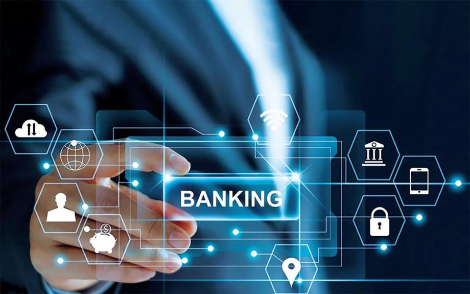

Криптовалюта

Внедрение блокчейна увеличивает скорость обмена, уменьшает временные затраты, улучшает качество, надежность и доступность услуг. При этом увеличивается прозрачность и надежность, снижаются риски. Главная сфера применения блокчейна — криптоиндустрия. Но помимо этого проекты на блокчейне используются в банковском секторе, сфере финансовых услуг, платежных сервисах, госсекторе (госуслуги, реестры недвижимости, нотариат, электронное голосование и др.), транспорте и логистике, IoT, здравоохранении, управлении интеллектуальной собственностью, энергетике, и т. д. В криптоиндустрии блокчейн стал технологической основой для выпуска криптовалют, которые являются осовремененной версией хайековских «частных денег». При этом крупнейшие из них, такие как биткоин и эфир, имеют глобальный характер обращения. На основе этой технологии происходит токенизация. Выпуск токенов — это особая форма секьюритизации активов на базе массового и глобального спроса инвесторов. Снижение издержек при этом гораздо значительнее, по сравнению с процедурами традиционных финансовых рынков.
Банковское дело
Блокчейн позволяет сделать все процессы в банковской индустрии безопаснее, надежнее и прозрачнее. Денежные переводы, расчеты при сделках с ценными бумагами, аккредитивы, KYC-комплаенс, рутинная работа бэк-офисов банков — все эти операции теперь проходят с внедрением этой технологии. Блокчейн может сократить затраты банков до 50%. Об этом заявляли еще в 2017 г. аналитики Morgan Stanley. По их мнению, блокчейн мог бы оптимизировать инфраструктуру, радикально сократить затраты и обеспечить необходимое повышение RoE (доходности собственного капитала) банков. Многим банкам, несмотря на присущую им консервативность, опасно было бы недооценивать потенциал этой технологии. Повсеместное ее внедрение может привести к ликвидации некоторых участников мировой финансовой системы.
Кибербезопасность
На каждом узле блокчейн-системы хранятся копии всей базы данных в целом, и они сверяются между собой. Это придает системе жизнеспособность даже в случае успешных хакерских атак на ее одиночные узлы. Несмотря на то, что приложения на блокчейне предлагают анонимность, технология может использоваться, чтобы прикреплять реальные идентификационные данные к криптографическим в базе данных. Известен стартап, создавший удобный способ безопасного внесения данных, их отслеживания и передачи имущественных прав через блокчейн-платформу. Это помогает риэлторским фирмам: управление записями становится удобнее, сокращается время поиска, растет конфиденциальность и прозрачность. Другой кейс — система репутации интернет-юзеров, начисляющая денежное вознаграждение в криптовалюте эфир, исходя из показателей репутации.
Удостоверение личности

Такие ID представляют собой перевод персональных данных о человеке на блокчейн, создание его цифрового профиля. Есть большой перечень госуслуг, доступ к которым может быть осуществлен посредством блокчейна, и есть статистика передовых блокчейн-стран (Эстония, некоторые эмираты ОАЭ). Использование блокчейна и блокчейн-ID активным гражданином может стать обычным паттерном поведения уже при жизни современного поколения. И в России, и на Западе государства в последние десятилетия активно ищут пути оптимизации своей административной деятельности. Хорошим решением для этого было бы перевести в блокчейн все рутинные и архаичные процессы. Проблематику прайваси и защиты информационной безопасности при этом никто с повестки дня не снимал — напротив, в эру блокчейна она станет приоритетом.